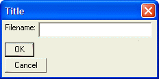

Specifying the Default Button
Generally when you design a dialog you will want to designate one of the buttons as the default buttons. Pressing the Enter key will select the default button.
Putting a ?*' at the start of a button definition designates the button as the default button.
The following script makes the "OK" button the default button:
ui_dlg_box("Title",<<%dlg% {region} Filename: [.32filename] {endregion}; <*OK>; %dlg%) |
This script creates this dialog:

Lesson 4: Default Button
Next
Limitations
Desktop applications only